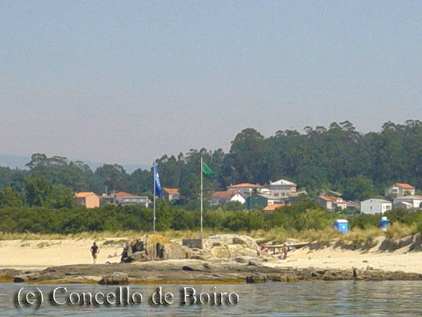
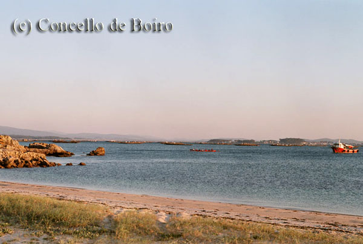
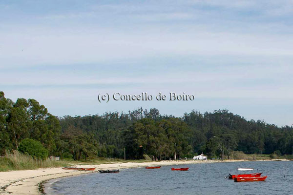

Boiro
Atrás-

Playa Bandera Azul Barraña
-

Playa Bandera Azul Playa Barraña-Saltiño
-

Playa Bandera Azul Piñeirón
-

Playa Bandera Azul Carragueiros
-

Playa Bandera Azul Retorta
-

Playa Bandera Azul Ladeira do Chazo
-

Playa de Mañons
-
Centro Social de Boiro
-

Muelle Antiguo de Cabo de Cruz
-

Puerto Mejillonero
-

Castro do Achadizo
-

Horreo dos Carreró
-

Fachada Marítima en Ribeira Grande
-

Cruceiro Ruta Xacobea Mar de Arousa-Ulla
-

Paseo Marítimo de Carragueiros
-

Mirador de la Cantera del Chazo
-

Capilla de la Virgen del Carmen do Chazo
-

Complejo Húmedo de Carragueiros y Sistema Dunar